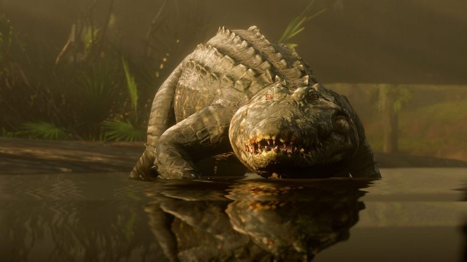
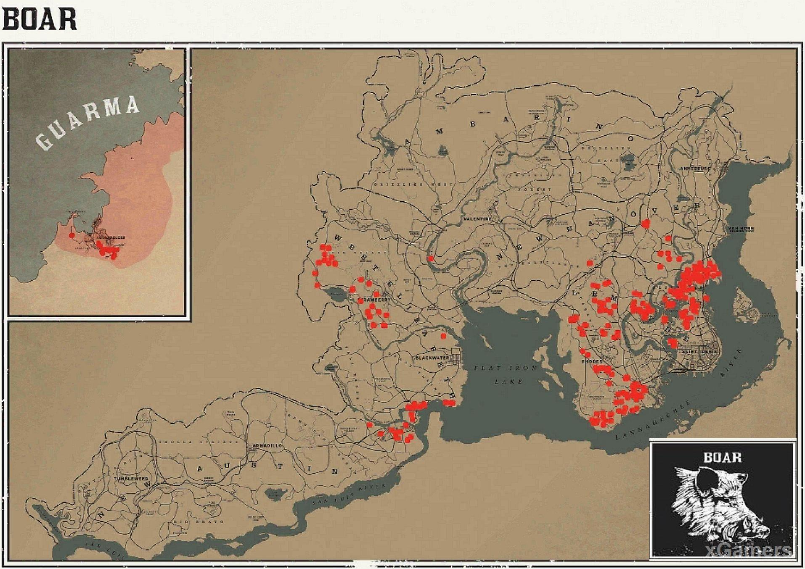
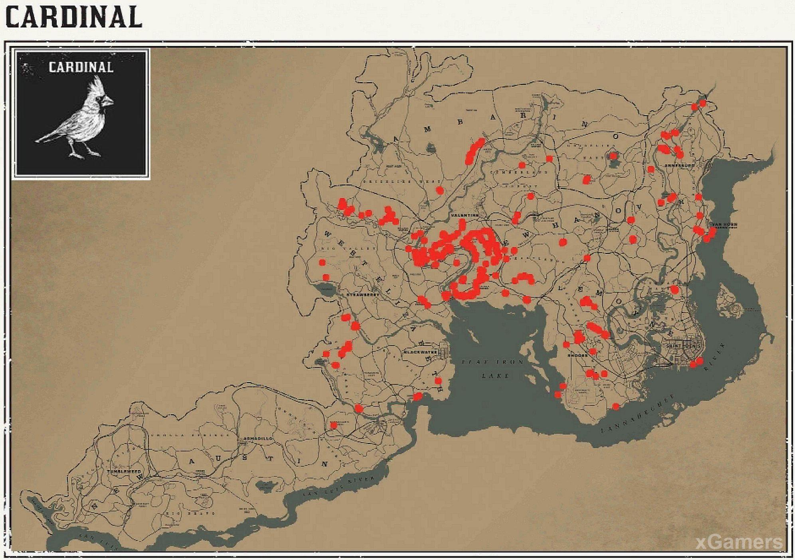

Природа в Red dead redemption 2 разнообразна, здесь насчитывается около 200 видов зверей и птиц. В игре есть аллигаторы, медведи, волки, бараны, куры, летучие мыши, хорьки, лягушки, змеи, орлы, вороны, крысы, овцы, скунсы и даже крабы. Настоящий мир дикой природы, как и в реальности. Каждое животное имеет свои характерные повадки. К примеру, пумы — проворные и опасные хищники. Они могут молниеносно напасть на зазевавшегося Артура в самый неподходящий момент. Олени сбиваются в стаи и при малейших признаках опасности пускаются в бега. Волки тоже живут и охотятся группами. Если Артура окружит волчья стая, то он испытает на себе все прелести положения загнанной добычи: животные начнут свою игру с жертвой, пользуясь численным превосходством. Аллигаторы — невероятно опасные хищники, которые обладают талантом к маскировке. Они прячутся на отмели и могут выжидать свою добычу часами, притворившись бревном. Медведи на первый взгляд могут стать легкой добычей, ведь мишень такая крупная, но у них большой запас здоровья и сил, поэтому убить лесного великана так просто не получится.
Повадки всех животных в игре основаны на повадках их реальных прототипов. Если Артур проявит неосторожность и выдаст себя во время охоты, не факт, что добыча пустится в бега, сверкая лапками. Некоторые непуганые экземпляры могут даже подойти поближе из чистого любопытства, насторожив ушки. Если Артур не убил добычу с первого выстрела, он становится перед выбором: добить или обречь на страдания. Недобитых животных можно использовать в качестве приманки для крупных хищников в лучших охотничьих традициях, а останки подойдут для падальщиков, которые не побрезгуют завтраком с душком.
Шкуры лучше не портить, поэтому оптимальный способ добить жертву — меткий выстрел в голову. Множество дыр от дроби снижает количество мяса, которое можно получить с животного. Механика процесса охоты максимально приближена к реальным условиям. То, какой она будет: успешной или провальной, зависит от множества факторов. В первую очередь, это подготовка и сноровка Артура. Нужно правильно подобрать экипировку, выследить животное, осторожно подобраться к нему на расстояние выстрела. Если Артур подойдет к добыче не с подветренной стороны, то она учует его запах и может ускользнуть из рук. Особое внимание нужно уделить оружию. С дробовиком хорошо охотиться на крупных животных, а кролика дробь порвет на тряпочки и Артур в результате останется с пустыми руками. Для мелких животных используют обычные стрелы, для средних — ядовитые стрелы или огнестрельное оружие, в крупных можно убить только с помощью улучшенных ядовитых стрел или пулеметов, винтовок. Верх мастерства охотника — чистый выстрел точно в жизненно важный орган.
На кой мне это надо?

Охота позволяет вам получить три типа вещей — мясо, шкуры и крафт-ингредиенты. Если хотите создавать лучшие боеприпасы и ходить в одежде, повышающей запас здоровья Артура Моргана, то охота — верный способ этого добиться. Вот малая часть того, что вы можете сделать с предметами, добываемыми во время охоты:
- Разбить лагерь и приготовить на костре мясо — самый простой метод поддерживать силы Артура Моргана, утолив его голод.
- Части животных могут использоваться в лагере для крафта: животный жир для создания взрывчатых веществ, перья — специальных стрел.
- Туши и части животных могут быть проданы Пирсону в лагере Датча и использованы либо для пожертвования в общий фонд банды, либо для разблокировки апгрейдов.
- Туши животных и их органы можно продать мясникам для получения нескольких долларов.
- Определенные части тел животных могут использоваться для создания талисманов у скупщиков краденого, которые на постоянной основе повышают характеристики Артура Моргана.
- Снимая шкуры животных и выполняя испытания ветки "Охотинка", вы впоследствии разблокируете лучшее снаряжение в RDR 2.
Оружие и боеприпасы для "чистых убийств"
- Малые животные — их нужно убивать из лука, используя небольшие стрелы.
- К малым животным можно отнести крысу, летучую мышь, белку, бурундука, лягушку, жабу, змею, сойку, кардинала, малиновку, дятла и другие виды мелких птиц.
- Животные умеренных размеров — их лучшие всего убивать из Варминт-винтовки с патронными .22 калибра.
- К числу таких животных можно отнести игуану, ядозуба, зайца, броненосца, барсука, ондатру, опоссума, енота, скунса, орла, журавля, ястреба, сову и других подобных птиц.
- Среднегабаритные животные — для идеального убийства используйте боеприпасы следующих типов: обычные и ядовитые стрелы, простые и ядовитые метательные ножи, любые боеприпасы оружия с повторителем, кроме взрывчатых, любые боеприпасы винтовок, кроме взрывчатых, любые патроны для дальнобойного оружия, кроме взрывчатых.
- Большие звери — для получения идеальной шкуры используйте следующие боеприпасы: обычные и ядовитые стрелы, ядовитые метательные ножи, любые боеприпасы для обычных и снайперских винтовок за исключением взрывчатых.
- К числу больших животных относятся небольшие крокодилы, черепахи, кабаны, горные козлы, пумы, пантеры, большие бараны, волки, олени, зубры, козы, овцы и дикие свиньи (пекариевые).
- Огромные звери — можно использовать ядовитые и улучшенные стрелы, ядовитые метательные ножи, все патроны для снайперских и обычных винтовок за исключением взрывчатых, и даже дробовик.
- К этим животным относятся медведи, бизоны, быки, сохатый и американский лоси, коровы, буйволы, крупные аллигаторы.
Место нахождения животных
Ниже, приведен список животных, нажмите на нужное вам животное, и увидите ореал его обитания
- Аллигатор
- Броненосец
- Барсук
- Летучая мышь
- Медведь
- Бобёр
- Бизон
- Черный медведь
- Голубая сойка
- Кабан
- Олуша
- олень
- Бык
- Лягушка
- Кардинал
- Бурундук
- Пума
- Пантера
- Волк
Аллигатор
Броненосец
Барсук
Летучая мышь
Медведь
Бобёр
Бизон
Черный медведь
Голубая сойка
Кабан
Олуша
Олень
Бык
Лягушка
Кардинал
Курица
Бурундук
Пума
Пантера
Волк